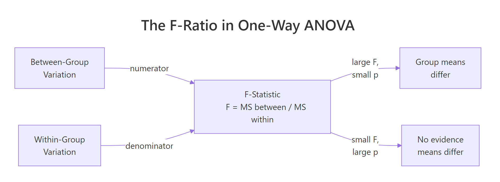
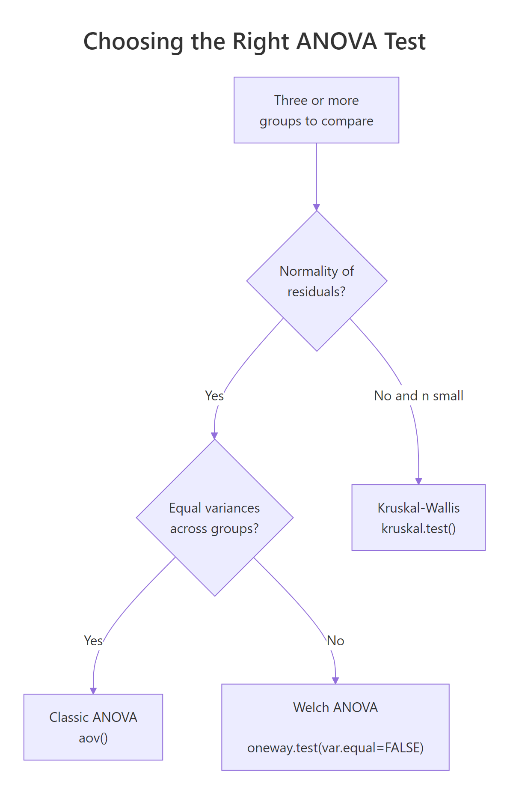
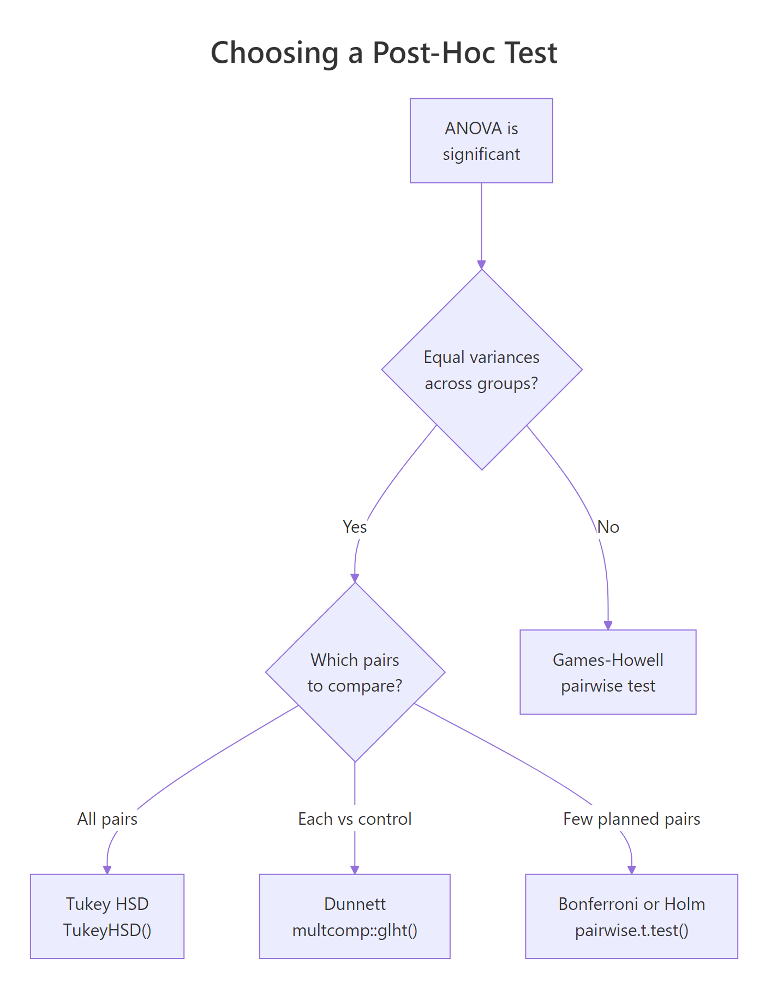

One-Way ANOVA in R: F-Test, Levene's Test, and Post-Hoc, Complete Walkthrough
One-way ANOVA tests whether three or more group means differ by comparing variation between groups to variation within groups. In R, you fit the model with aov(), confirm the assumptions with Levene's test and a residual QQ plot, read the F-statistic and p-value, then run a post-hoc test like TukeyHSD() to see which specific pairs of groups actually differ.
How does one-way ANOVA compare group means?
Let's start with the simplest useful ANOVA: does plant weight change across three different treatments? The built-in PlantGrowth dataset has 30 observations split across a control and two treatment groups, which is exactly the shape of problem ANOVA was built for. One call to aov() plus summary() gives you the F-statistic and the p-value that answer the question.
The F-value is 4.85 and the p-value is 0.016, which is below 0.05. We reject the null that all three group means are equal. ANOVA does not tell us which group drives the effect, only that at least one group is out of line with the others. A post-hoc test will pin that down next.

Figure 1: The F-statistic is the ratio of between-group variation to within-group variation. A large F (with a small p) says the groups differ.
Under the hood, aov() is asking a simple question: how much of the variation in weight is explained by group, compared to the variation that's left over inside each group? That ratio is the F-statistic. If groups are tightly clustered around their own means while the group means are far apart, F is large. If the groups overlap heavily, F is near 1 and the p-value is large.
Let's look at the group means and spreads directly to build intuition.
The trt2 plants are about 0.87 grams heavier on average than trt1 plants, and the within-group spreads (SDs of 0.44 to 0.79) are modest compared to that gap. That is the signal-to-noise pattern that produced an F of 4.85.
Try it: Fit a one-way ANOVA on the built-in iris dataset to test whether Sepal.Length differs across Species. Save the fitted model to ex_aov and print its summary.
Click to reveal solution
Explanation: Three iris species with 50 flowers each produce a huge F (119) and a near-zero p-value. The three species clearly differ in sepal length, and the size of F tells us the between-species signal dwarfs the within-species noise.
How do you fit a one-way ANOVA with aov()?
The formula syntax response ~ factor is the R convention shared by regression, ANOVA, and many modelling functions. On the left is the continuous outcome; on the right is the categorical grouping variable. aov() returns a fitted model object, and summary() prints the ANOVA table from it.
Before trusting a test, look at the data. A boxplot shows medians, spreads, and outliers side-by-side and is the single most effective ANOVA diagnostic.
The trt2 box sits visibly above trt1, and ctrl falls in between. There are no extreme outliers, and the boxes overlap but do not coincide. Graphs like this are what the F-test is formalising: "are these boxes stacked far enough apart, given their widths, that chance alone cannot explain it?"
Now let's peek at how aov() relates to the workhorse lm() function. They are the same fit under the hood; aov() just formats the output as an ANOVA table instead of a regression table.
The table is identical to what summary(aov1) printed. The practical difference is only in the defaults: aov() is the right entry point when ANOVA is the story; lm() is better when you will also want regression diagnostics, coefficients, or predict().
aov() gives you a clean ANOVA table; lm() gives you coefficients, residuals, and predict() for downstream work.Try it: From the summary of aov1, extract the F-value and the p-value programmatically so you could log them to a report. Store them in ex_f and ex_p.
Click to reveal solution
Explanation: summary.aov returns a list of one data frame. Columns are named exactly as they print, so [["F value"]] and [["Pr(>F)"]] pull the numbers out. Index [1] picks the group row rather than the Residuals row.
How do you check one-way ANOVA assumptions?
Classic one-way ANOVA rests on three assumptions. Independence of observations comes from study design, not from a statistical test. Normality means the residuals (observed minus group mean) follow a normal distribution, and homogeneity of variance means every group has roughly the same spread. ANOVA is fairly robust to small departures when group sizes are balanced, but large violations distort the F-distribution and inflate error rates.
Let's check normality first. Pull the residuals from the fitted model, then run a Shapiro-Wilk test and a QQ plot together.
Shapiro returns a p-value of 0.44, well above 0.05, so we fail to reject normality. That is what we want: high p here means "the data are consistent with a normal distribution." The QQ plot should show points roughly on the diagonal line, which it does.
Now homogeneity. The industry-standard tool is Levene's test from the car package. Unlike the older Bartlett test, Levene does not itself require normal data, which makes it safer in practice.
The p-value is 0.34, so we again fail to reject the null. "Fail to reject" is the good news here: we have no evidence that the group variances differ, which means classic ANOVA is appropriate.
Try it: Run Levene's test on iris Sepal.Length by Species. Is the equal-variance assumption met?
Click to reveal solution
Explanation: Levene returns a significant p-value (0.002), so iris species do not share the same Sepal.Length variance. That is exactly the situation where Welch ANOVA is safer than classic ANOVA, which we cover in the next section.
What if the equal-variance assumption fails? (Welch ANOVA)
When Levene's test says "variances differ," the classic F-test loses its guarantee on the type-I error rate. Welch's one-way ANOVA, available in base R as oneway.test(var.equal = FALSE), adjusts the degrees of freedom to stay valid under unequal variances. It still expects approximately normal residuals, so it is not a fix for wildly skewed data.

Figure 2: Decision path for picking the right ANOVA flavour based on normality and variance homogeneity.
Here is Welch ANOVA run on the same PlantGrowth data, alongside the classic version for comparison.
The two F-values are close (4.85 vs 5.18) and both p-values sit under 0.02. Welch's denominator degrees of freedom dropped from 27 to about 17, which is the cost of relaxing the equal-variance assumption. When variances really do differ, Welch gives you a p-value you can trust; when they don't, classic ANOVA is very slightly more powerful.
kruskal.test(response ~ group, data = df) when residuals are clearly non-normal and your sample size is small. It ranks the data first, so it is robust to skew and outliers.Try it: Given that iris variances differ across species (you showed this in the previous Levene exercise), run Welch's ANOVA on Sepal.Length by Species and compare its F-value to the classic F.
Click to reveal solution
Explanation: Welch bumps F from 119 (classic) to 139 and trims denominator df from 147 to about 92. The iris species differ so dramatically that both tests agree, but the Welch version is the safer report when you know variances are unequal.
Which post-hoc test should you run after a significant ANOVA?
A significant ANOVA tells you "at least one mean is different." Post-hoc tests tell you which pairs differ. Running plain pairwise t-tests without correction would inflate the false-positive rate: with three groups and three comparisons, the chance of at least one spurious "significant" result climbs from 5% to about 14%. Post-hoc methods correct for that.

Figure 3: Which post-hoc test to run depends on whether variances are equal and which pairs you want to compare.
Tukey's Honest Significant Difference (HSD) is the default choice when variances are equal and you want all pairwise comparisons. R has it built in.
Read each row as "group A minus group B." trt2-trt1 has a mean difference of 0.865 grams with a 95% confidence interval that does not cross zero, and an adjusted p-value of 0.012. That is the pair driving our significant ANOVA. The other two comparisons have intervals that cross zero and p-values above 0.05, so we cannot call them different.
If Tukey's HSD is not the right fit, pairwise.t.test() offers the same logic with different correction methods. Bonferroni is the most conservative; Holm is a strict-but-less-wasteful improvement.
Both methods flag trt2 vs trt1 as the significant pair, matching Tukey. Holm's p-values for the non-significant pairs are smaller than Bonferroni's because Holm is uniformly less conservative, yet it preserves the same family-wise error guarantee.
rstatix::games_howell_test() or PMCMRplus::tukeyTest(); Dunnett is in multcomp::glht(). Install those packages locally if your analysis needs them. Tukey HSD and pairwise.t.test() in this tutorial cover the large majority of real-world post-hoc needs.Try it: Run TukeyHSD on the iris ANOVA you fit earlier (ex_aov) and identify which Species pair has the largest mean Sepal.Length difference.
Click to reveal solution
Explanation: All three adjusted p-values round to zero, so every species pair differs. The largest gap is virginica - setosa at 1.58 cm. The practical takeaway: with a strong underlying signal, Tukey often flags every pair, and the effect sizes (the diff column) are what distinguish the biggest gaps.
How big is the group effect? (Eta-squared)
A p-value tells you whether an effect exists. An effect size tells you how big it is. The standard ANOVA effect size is eta-squared ($\eta^2$), the proportion of total variation explained by group membership. Small effect is $\eta^2 \approx 0.01$, medium is $\approx 0.06$, and large is $\geq 0.14$ by Cohen's conventions.
The definition is straightforward:
$$\eta^2 = \frac{SS_{\text{between}}}{SS_{\text{total}}}$$
Where:
- $SS_{\text{between}}$ = the sum of squared deviations of each group mean from the overall mean, weighted by group size
- $SS_{\text{total}}$ = the sum of squared deviations of every observation from the overall mean
You can compute it by hand from the sums of squares that summary(aov1) already prints, or directly from the data.
$\eta^2$ of 0.264 means group membership accounts for 26% of the variation in weight. That is a large effect by Cohen's rule of thumb, and it matches the visible gap we saw in the boxplot.
Try it: Compute $\eta^2$ for the iris Sepal.Length model using the same formula. Save it as ex_eta.
Click to reveal solution
Explanation: Species explains about 62% of the variation in sepal length. That is an enormous effect and is why the iris dataset is such a popular teaching example: the group structure is unmistakable.
Practice Exercises
Exercise 1: Full workflow on chickwts
The chickwts dataset records the weight of chicks on six different feed types. Run the full one-way ANOVA workflow on it. Specifically: fit the model, run Levene's test, check if classic ANOVA is appropriate, report F and p, run TukeyHSD, and compute $\eta^2$. Save the fitted model to my_aov and the effect size to my_eta.
Click to reveal solution
Explanation: Levene's p of 0.59 says variances are fine, so classic ANOVA is valid. F of 15.4 with p near zero and $\eta^2$ of 0.54 tells us feed type has a very large effect on chick weight. Tukey then pinpoints the specific feed pairs that differ.
Exercise 2: Unequal variances and Welch
Generate three groups of 30 observations each where group means are close but group standard deviations differ a lot (for example 1, 3, and 5). Apply both classic and Welch ANOVA. Compare the F-values and p-values. Save the Welch result to my_welch.
Click to reveal solution
Explanation: The classic test reports p = 0.029, but it assumes all three groups share a variance, which they do not. Welch adjusts the denominator df down from 87 to 47 and returns p = 0.053. The conservative Welch result is the one you should trust here, because ignoring unequal variances in classic ANOVA inflates the false-positive rate.
Complete Example
Let's run the full pipeline end-to-end on the iris dataset. The question: does sepal length differ across species? Each step below is what you would put in a real analysis report.
Reporting sentence you could drop into a paper or dashboard:
A one-way ANOVA with Welch correction showed that sepal length differed significantly across the three iris species, F(2, 91.6) = 138.9, p < .001, $\eta^2$ = 0.62. Tukey HSD post-hoc comparisons indicated that every pairwise difference was significant (all adjusted p < .001), with virginica having the longest sepals (mean 6.59 cm) and setosa the shortest (5.01 cm).
Summary
You now have a complete one-way ANOVA workflow in R: explore, check assumptions, fit, follow up with post-hoc tests, and report effect size.
| Step | Function | What to check |
|---|---|---|
| Visualise | ggplot() + geom_boxplot() |
Group medians, spreads, outliers |
| Normality of residuals | shapiro.test(residuals(aov1)), qqnorm() |
High p, points on QQ line |
| Homogeneity of variance | car::leveneTest() |
High p (fail to reject equal variances) |
| Fit classic ANOVA | aov(y ~ group, data) + summary() |
F-value, Pr(>F) |
| Fit Welch ANOVA (if Levene failed) | oneway.test(y ~ group, var.equal = FALSE) |
Same F/p interpretation |
| All-pairs post-hoc | TukeyHSD(aov1) |
95% CI that excludes 0, adjusted p |
| Planned comparisons | pairwise.t.test(y, group, p.adjust.method = "holm") |
Adjusted p per pair |
| Effect size | $\eta^2 = SS_{between} / SS_{total}$ | Cohen: 0.01 small, 0.06 medium, 0.14 large |
Rule of thumb order of operations: EDA → Levene → pick classic or Welch → summary for F and p → post-hoc only if ANOVA is significant → always report effect size.
References
- R Core Team.
?aovdocumentation. stat.ethz.ch/R-manual/R-devel/library/stats/html/aov.html - R Core Team.
?oneway.testdocumentation. stat.ethz.ch/R-manual/R-devel/library/stats/html/oneway.test.html - Fox, J. & Weisberg, S. (2019). An R Companion to Applied Regression, 3rd Edition. Sage. (car package,
leveneTestreference.) socialsciences.mcmaster.ca/jfox/Books/Companion - Kutner, M.H., Nachtsheim, C.J., Neter, J., & Li, W. (2005). Applied Linear Statistical Models, 5th Edition. McGraw-Hill/Irwin. Chapters on single-factor ANOVA.
- Tukey, J.W. (1949). "Comparing Individual Means in the Analysis of Variance." Biometrics 5(2), 99-114.
- Welch, B.L. (1951). "On the Comparison of Several Mean Values: An Alternative Approach." Biometrika 38(3/4), 330-336.
- Games, P.A. & Howell, J.F. (1976). "Pairwise Multiple Comparison Procedures with Unequal N's and/or Variances: A Monte Carlo Study." Journal of Educational Statistics 1(2), 113-125.
Continue Learning
- t-Tests in R: When you only have two groups to compare, a t-test is the right tool. It is the two-group special case of one-way ANOVA.
- Wilcoxon, Mann-Whitney and Kruskal-Wallis in R: The non-parametric toolkit for when normality is clearly violated. Kruskal-Wallis is the rank-based sibling of one-way ANOVA.
- Effect Size in R: A deeper treatment of $\eta^2$, $\omega^2$, Cohen's f, and how to choose and report effect sizes in practice.